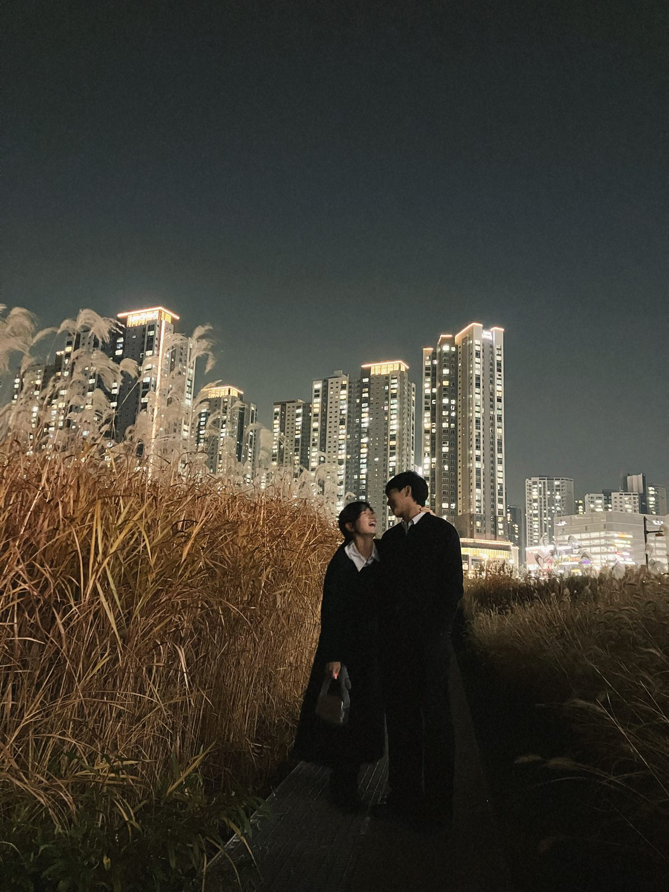

신랑 석주
채창환·강기숙 의 장남

- Sat, Aug 21st, 2027 -
A green summer evening, a lifelong promise,
and love lights every step of the way.
짙은 초록이 머무는 여름 저녁,
저희 두 사람이
서로의 곁을 약속합니다.
노을처럼 천천히 물든 마음을 모아
한 걸음을 내딛는 자리에
귀한 걸음 더해 주신다면
오래 기억될 하루가 되겠습니다.

You can not be happy every day.
But there are happy things every day.
매일 행복할 순 없지만,
행복한 것들은 매일 있어.
<곰돌이 푸> 中
신랑 석주
채창환·강기숙 의 장남
신부 혜준
박장희·이미영 의 차녀

여름의 한가운데서 보내는 첫 번째 편지
가장 푸르고 뜨거운 계절에
평생을 함께할 약속을 하려 합니다.
저희의 첫걸음을
따뜻하게 지켜봐 주세요.
- 석주, 혜준 -
2027년 8월 21일 토요일 오후 6시
에스가든웨딩 동탄점 단독홀
8월
| 일 | 월 | 화 | 수 | 목 | 금 | 토 |
|---|
D-0
2027년 8월 21일
에스가든웨딩 동탄점
단독홀
경기 화성시 동탄영천로 150
현대실리콘앨리 S동 B2층
동탄역 →에서 웨딩홀
동탄역 2번 출구 앞 버스정류장에서 탑승
예) 17:0017:1517:3017:45 … 18:30 막차
웨딩홀 →에서 동탄역
예식 후 저녁 8시 30분까지 운행
예) 18:3018:4519:00 … 20:30 막차
기흥IC · 기흥동탄IC에서 1km 이내
S동 주차장으로 바로 진입
🅿️ 건물 내 약 1,700대 주차 가능
“에스가든웨딩 동탄점” 검색
멀리서도 축하의 마음을
전하고 싶으신 분들을 위해
계좌번호를 안내드립니다.
보내주시는 따뜻한 마음,
오래 간직하겠습니다.
신랑 채석주
○○은행 000-0000-0000
아버지 채창환
○○은행 000-0000-0000
어머니 강기숙
○○은행 000-0000-0000
신부 김혜준
○○은행 000-0000-0000
아버지 박장희
○○은행 000-0000-0000
어머니 이미영
○○은행 000-0000-0000